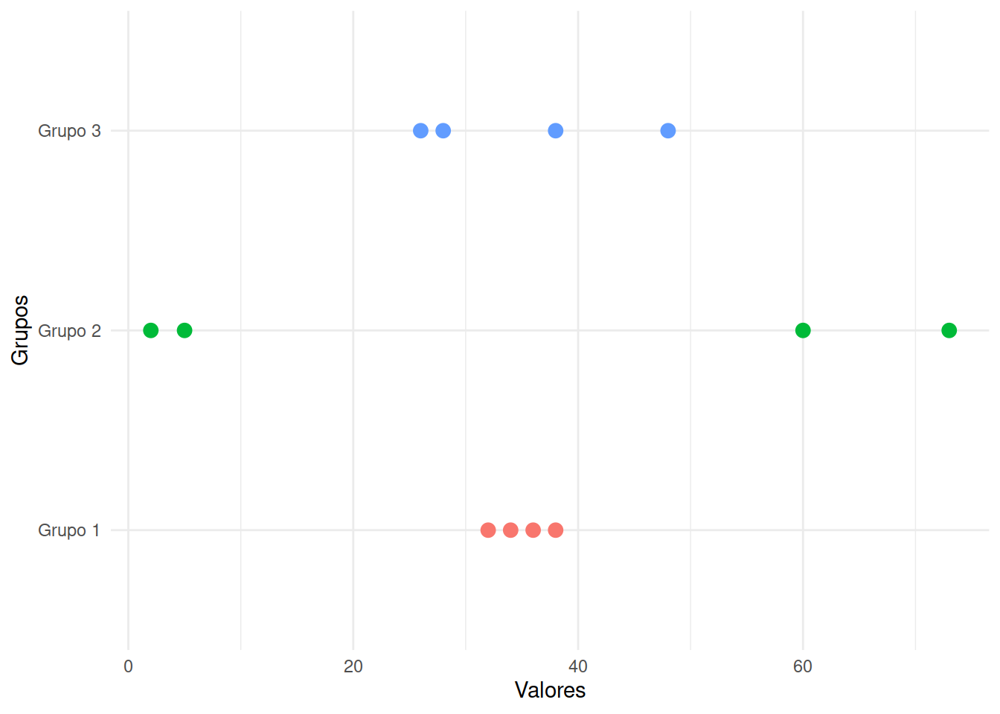

Spongaos que solo se nos dice que un grupo conformado por 4 personas tiene un promedio de edad de \(35\) años. Todos inicialmente suponemos que se trata de cuatro personas adultas que tienen edades cercanas a \(35\) años. Pero puede ocurrir que estemos lejos de acertarlo, pues existen multiples combinaciones de edades que tienen como promedio \(35\) años.
Por ello es necesario tener más informacion sobre el grupo.
| Grupo 1 | Grupo 2 | Grupo 3 |
|---|---|---|
| Edades : 32, 34, 36, 38 | Edades : 2, 5, 60, 73 | Edades: 26,28,38,48 |
| Promedio : 35 años | Promedio : 35 años | Promedio : 35 años |
library(ggplot2)
# Crear un dataframe con los datos
data <- data.frame(
Valor = c(32, 34, 36, 38, 2, 5, 60, 73, 26, 28, 38, 48),
Grupo = factor(rep(c("Grupo 1", "Grupo 2", "Grupo 3"), each = 4))
)
# Crear el gráfico de dispersión horizontal en una sola recta con puntos más grandes y sin leyendas
ggplot(data, aes(y = Grupo, x = Valor, color = Grupo)) +
geom_point(size = 3) +
labs(x = "Valores", y = "Grupos") +
theme_minimal() +
theme(legend.position = "none") # Elimina las leyendas
Hace falta otro indicador que nos oriente de cual grupo hablamos
cuando solo tenemos como información : media = \(35\) años. Esta necesidad la suplen los
indicadores de dispersión.
\(r = max(x) - min(x)\)
En caso de los dos grupos:
| Grupo 1 | Grupo 2 | Grupo 3 |
|---|---|---|
| \(\bar{x} = 35\) años | \(\bar{x} = 35\) años | \(\bar{x} = 35\) años |
| \(r = 6\) años | \(r = 71\) años | $r = 22 $ años |
Los tres grupos posee un mismo valor promedio pero difieren en su dispersión
Es la medida de dispersión más utilizada en estadística y está definida por
\[s^{2}=\frac{1}{n-1} \sum_{i=1}^{n} (x_{i}-\bar{x})^{2}\]
Realizando algunos pasos de algebra podemos expresar la varianza de la siguiente forma : \(s^{2} = \frac{1}{n} \sum x_{i}^{2}- (\bar{x})^{2}\)
La varianza es siempre no negativa \(s^{2} \geq 0\), dado que corresponde a la suma de valores de diferencias que al elavar al cuadrado tienen valores positivas, dividida por un valor positivo, da como resultado un valor positivo
La varianza de una constante es cero \(s_{k}^{2}=0\). Al ser los valores todos iguales, por ejemplo \(5, 5, 5, 5, \ldots\), tendrán como media el mismo valor, en este caso \(5\). Por tal razón las restas de \(x_i - \bar{x}\), será simpre igual a cero y la suma total será cero.
Si \(y_{i}= x_{i} + k\), entonces \(s_{y}^{2}= s_{x}^{2}\). Esta propiedad indica que aunque sumemos una constante a un grupo de datos, su varianza original con cambia. La varianza de su transformación continua siendo la misma.
Si \(y_{i}=k x_{i}\), entonces \(s_{y}^{2}= k^{2} s_{x}^{2}\). En el caso de multiplicar una constante \(k\) por una variables \(x\), la varianza de la transformación se amplifica de manera cuadrática.
Si \(z_{i} = a x_{i} + b y_{i}\), entonces \(s_{z}^{2}\) = \(a^{2}s_{x}^{2}\) + \(b^{2}s_{y}^{2}\) + \(2ab\) \(cov(xy)\). Al contruir una combinación lineal de dos variables, para obtener la varianza del total, aparece un tercer termino ademas de las varianzas individuales que en este caso se aplifican por las constantes \(a\) y \(b\), con la covarianza de \(x\) y \(y\), que conforma un indicador de varianza compartida entre las dos variables.
La varianza se puede interpretar como el promedio de las diferencias cuadradas entre cada uno de los datos y la media.
39 41 51 42 43 52 45 34 38 39 49 44 44 43 39 53 45 30 46 39 36 41 36 38 38 32 47 43 35 50
varianza = 34.6 años cuadradosEl problema de la varianza es su interpretación
Sus unidades son al cuadrado y en la mayoría de los casos no es posible interpretarlos. Por ejemplo en el caso de que nuestra variable corresponda a la edad, tendríamos como unidades de la varianza años cuadrados, que corresponde a una unidad de dificil interpretación.
Por esta razón se optó por utilizar otra mediada de dispersión
Es la raíz cuadrada de la varianza
\[s=\sqrt{s^{2}}\]
varianza = 5.9 añosNo aplican todas las propiedades de la varianza. Es decir que las propiedades se deben aplicar a las varianzas y transformarlos tomando la raiz cuadradas para ser utilizados en terminos de desviación estandar.
Esta medida aun tienen problemas de interpretación dado que se debe contar con límites en cada caso para establecer si es apropiada o nó de acuerdo a los objetivos planeados en cada proyecto.
Como solución se plantea otro indicador en términos relativos
Nos indica que tan grande o que tan pequeña es la desviación estándar con respecto a su media
\[CV= \dfrac{s}{\bar{x}} \times 100 \% \]
Existen diferentes reglas empíricas para la interpretación del coeficiente de variación. Una de ellas establece como límite el 10% para considerar un valor bajo. Valores entre 10% y 20% valores moderados y por encima del 20% valores de dispersión altos.
Estos límites dependen del contexto específico de los datos como por ejemplo criterios en proceso de producción en laboratorio farmaceutico se deben tener criterios más exigentes que en un proyecto de investigación sobre compartamiento credicticio de los clientes.
coeficiente de variacion = 0.141 años cuadradosEn este caso indica que los valores presentan una moderada variabilidad al presentar un coeficiente de variación del \(14.1\)%